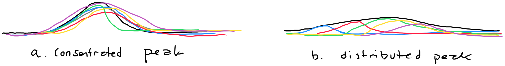

Understanding the peak-problem
Status: Rough draft!
I am trying to understand and explore aspects of the peak-demand problem, in particular within the electricity grid from a household perspective. Peak-demand is when there is the highest amount of demand on the electricity system. This is typically when a large amount of consumers need energy at the same time. One famous example is the TV-surge in the UK, where there is a significant increase in demand created by people putting over a kettle as TV-shows end. The peak-demand problem introduces two1 related problems, that go into effect depending on local conditions. So, with this reference, I have tried to sketch peak versus non-peak below.

First, peak-demand create a need for increasing production of energy. In traditional systems, the increase in demand might be anticipated and production can be increased. In systems that are based on unstable sources of energy (wind, sun, water), this can become a problem where auxiliary production is needed (peak power stations). Second, peak-demand introduces an increased load on the grid – for both transimission and local distribution. This increases the strain on the grid and transformer stations, and the local grid. While the kettle might introduce a significant increase already, I assume the problem will worsen if everyone come home and plug in an Electrical Vehicle (EV) at the same time (and we do not have an intelligent response in the grid and household). EVs draw significantly more power than kettles.
I do not yet know if the peak demand problem is mostly challenging production or distribution. This likely depend on the local infrastructure, energy sources and demand patterns.
The dynamics of peak demand
flexible or inflexible
dataviz of my consumption
impact or no impact
Reshaping peak
The challenge of peak-demand invites doing something about the peak. Below is a sketch that illustrates the various strategies. I have not considered increasing the capacity of the grid or production, as this makes little sense strategically (see Jevons Paradox and Khazzoom-Brookes postulate2)).
We have three options:
Remove peak consumption: Construct some intervention that remove the peak consumption. If I stop cooking my meals and just eat a sandwhich for dinner, then I’ve removed some consumption.
Move peak consumption: Move the consumption to another time. If I start eathing dinner outside peak-hours, e.g. at 21, I have effectively removed (my consumption) from peak.
Distribute consumption: Consider interventions that distributes the local consumption to flatten peak. This could be cooking earlier and then just reheat at dinner time.
Now, there are two considerations here. First, the peak I showed above is my peak consumption. That is only important if it coincide with peak consumption in the part of the grid I’m part of (see figure 1). Second, and implied, moving can then either be considered a question of chaging my behaviour entirely or being flexible on a collective level. That is, I get to keep my peak consumption, I just have to move it.
Strategies for changing behaviour and affecting peak
I do not have a full overview of the research, nor do I know all the possible intervention strategies to affect peak.
System-centric
Consumer-centric
Collective interventions
I have very little information for now on the effective strategies. I hypothesise that both individual (household) behaviour change and collective (neigborhood) efforts will be effective. One common strategy is to use monitary incentives to change people’s behaviour. That is to have dynamic pricing and add a peak-tariff to encurage people to remove or move their energy use from peak hour. That is an effective strategy, but it also something that affect individual economies differently (it has a socio-economic implication).
What is the economic thresshold for economic incentives? What approches do we have to counter the uneven
Motivations?
Footnotes
likely more, will expand as I figure more out↩︎
the postulate states that “energy efficiency improvements that, on the broadest considerations, are economically justified at the microlevel, lead to higher levels of energy consumption at the macrolevel” Herring 1998. See alsoFich et al.↩︎